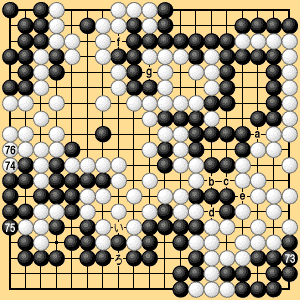

| 6.1 Normal Case (7) |
|---|
| The next example (Dia. 6-2-1) is the first game of a ten-game match played between Go Seigen (White) and Kitani. This game ended at White 276 with White winning by two points. In this game the exchange of White for Black can take place at any time, so there are seven neutral points from 'a' to 'g.' |
|  |
| Dia. 6-2-1 (273 - 276) |
|---|